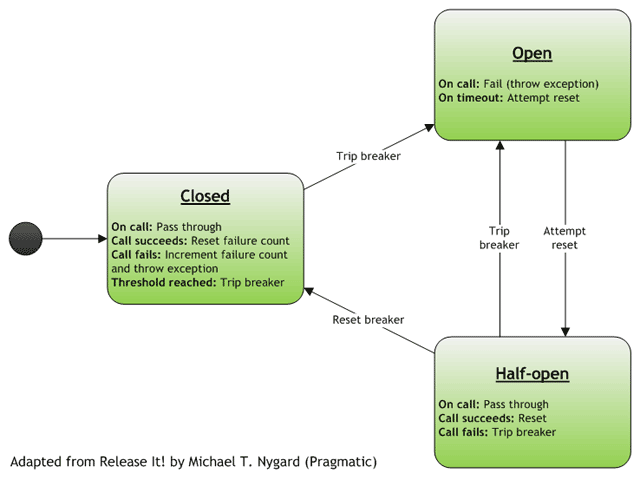

@ManagedResource public class CircuitBreakerTemplate extends AbstractGuard
Template for circuit breakers, which are components designed to protect clients from broken services by preventing faults from propagating across integration points.
For example, suppose that we have a web application that calls a web service. If the web service is having a problem (e.g., severe latency or perhaps complete unavailability), we don't want this to create problems for the app. Instead we want to isolate the problem.
The circuit breaker allows us to do just this. We associate a circuit breaker with each integration point, and the
breaker mediates calls from the client to the service. Under normal circumstances the breaker is in the closed state,
and calls pass through to the service. If however there is a problem, then the breaker goes into the open state for
some period of time. While the breaker is open, all attempts to call the service fail with a CircuitOpenException. Once the problem is resolved, the breaker returns to the closed state and normal operations
resume.

The circuit breaker pattern is described in detail in Michael Nygard's book, Release It! (Pragmatic).
We expose this guard as a JMX MBean so it can be queried and manipulated in management contexts. You can, for example, use JMX to trip and reset breakers manually.
| Modifier and Type | Class and Description |
|---|---|
static class |
CircuitBreakerTemplate.State |
| Constructor and Description |
|---|
CircuitBreakerTemplate() |
| Modifier and Type | Method and Description |
|---|---|
<T> T |
execute(GuardCallback<T> action)
Executes the specified action inside the circuit breaker.
|
int |
getExceptionCount() |
int |
getExceptionThreshold()
Returns the exception threshold for this breaker.
|
List<Class<? extends Exception>> |
getHandledExceptions() |
long |
getRetryTime() |
CircuitBreakerTemplate.State |
getState()
Returns the breaker's state, which is
CircuitBreakerTemplate.State.CLOSED,
CircuitBreakerTemplate.State.OPEN or CircuitBreakerTemplate.State.HALF_OPEN. |
long |
getTimeout()
Returns the open state timeout in milliseconds.
|
void |
reset()
Forces the breaker into the closed state, which is the default state.
|
void |
setExceptionThreshold(int threshold)
Sets the exception threshold for this breaker.
|
void |
setHandledExceptions(List<Class<? extends Exception>> exceptions) |
void |
setTimeout(long timeout)
Sets the open state timeout in milliseconds.
|
void |
trip()
Forces the breaker into the open state.
|
void |
tripWithoutAutoReset() |
getName, setBeanName@ManagedAttribute(description="Breaker trips when threshold is reached") public int getExceptionThreshold()
Returns the exception threshold for this breaker. This is the number of exceptions causing the breaker to trip.
@ManagedAttribute(description="Breaker trips when threshold is reached",
defaultValue="5")
public void setExceptionThreshold(int threshold)
Sets the exception threshold for this breaker. Once the threshold is reached, the breaker trips.
The default exception threshold is 5.
threshold - number of exceptions causing the breaker to tripIllegalArgumentException - if threshold < 1@ManagedAttribute(description="Delay in ms before open breaker goes half-open") public long getTimeout()
Returns the open state timeout in milliseconds. After the timeout expires, the next call causes the breaker to go into the half-open state.
@ManagedAttribute(description="Delay in ms before open breaker goes half-open",
defaultValue="30000")
public void setTimeout(long timeout)
Sets the open state timeout in milliseconds.
timeout - open state timeout in millisecondsIllegalArgumentException - if timeout < 0@ManagedAttribute(description="Breaker state (closed, open, half-open)") public CircuitBreakerTemplate.State getState()
Returns the breaker's state, which is CircuitBreakerTemplate.State.CLOSED,
CircuitBreakerTemplate.State.OPEN or CircuitBreakerTemplate.State.HALF_OPEN.
@ManagedAttribute(description="Number of exceptions since last reset") public int getExceptionCount()
@ManagedAttribute(description="Breaker will retry circuit at or after this time") public long getRetryTime()
@ManagedOperation(description="Resets the breaker") public void reset()
Forces the breaker into the closed state, which is the default state. The closed state allows calls to pass through.
@ManagedOperation(description="Trips the breaker, auto-resetting after timeout") public void trip()
Forces the breaker into the open state. The open state prevents calls from passing through.
@ManagedOperation(description="Trips the breaker without auto-resetting") public void tripWithoutAutoReset()
public <T> T execute(GuardCallback<T> action) throws Exception
Executes the specified action inside the circuit breaker.
T - action return typeaction - action to executeCircuitOpenException - if the breaker is in the open stateException - exception thrown by the action, if anyCopyright © 2010-2014. All Rights Reserved.